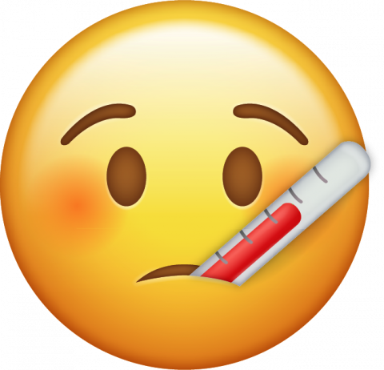

Our Efforts for COVID-19
Due to COVID-19, we have changed some things for a fun and COVID-free festival...
Limited Occupancy
This year, to avoid a crowded festival, we decided to limit the number of people allowed to the festival to people. Don't worry! You could still check other locations outside of the designated area for the festival!
Sanitizing Stations
Inside the festival, you will see several sanitizing stations so you could keep yourself clean. However, if you still want to bring your sanitizers, please don't hesitate to bring them!
Do Your Part!
Wear masks!
Source: York Region of Canada
We will not provide masks at the festival. Please bring your own!
Don't come if you're sick!
Source: Mt. Loafer
If you are experiencing fever, cough, or shortness of breath, don't come to the festival!
For more information click below...
COVID Alert NY